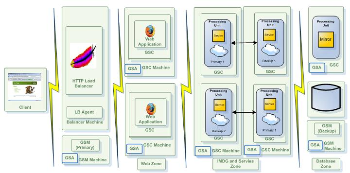

<?xml version="1.0" encoding="utf-8"?>
<html xmlns:MadCap="http://www.madcapsoftware.com/Schemas/MadCap.xsd">
    <head>
    </head>
    <body>
		<div class="product-bar">
			<p><a>Smart Cache</a>
			</p>
		</div>
        <h1><MadCap:variable name="General.ProductNameXAP" /> Considerations</h1>
        <h1><a name="the-runtime-environment-gsa-lus-gsm-and-gsc"></a>The Runtime Environment (GSA, LUS, GSM and GSC)</h1>
        <p>In a dynamic environment where you want to start <a href="../overview/the-runtime-environment.html#gsc">GSCs</a> and <a href="../overview/the-runtime-environment.html#gsm">GSMs</a> remotely, manually, or dynamically, the <a href="../overview/the-runtime-environment.html#gsa">GSA</a> is the only component that should be running on the machine hosting the <MadCap:variable name="General.CompanyName" /><a href="../admin/the-runtime-environment.html"> runtime environment</a>. This lightweight service acts as an agent and starts a GSC/GSM/LUS when needed.</p>
        <p>Plan the initial number of GSCs and GSMs based on the application memory footprint, and the amount of processing you might need. The most basic deployment should include 2 GSMs (running on different machines), 2 lookup services (running on different machines), and 2 GSCs (running on each machine). These host your data Grid or any other application components (services, web servers, Mirror) that you deploy.</p>
        <p>In general, the total amount of GSCs that should be running across the machines hosting the system depends on:</p>
        <ul>
            <li>
                <p>The amount of data you want to store in memory.</p>
            </li>
            <li>
                <p>The JVM maximum heap size.</p>
            </li>
            <li>
                <p>The processing requirements.</p>
            </li>
            <li>
                <p>The number of users the system needs to serve.</p>
            </li>
            <li>
                <p>The total number of CPU cores the machine is running.</p>
            </li>
        </ul>
        <div class="tc-admon-tip">
            <p>The recommended number of GSCs a machine should host is <span class="tc-bold">half of the amount</span> of total CPU cores, each having no more than a 10GB maximum heap size.</p>
        </div>
        <h2><a name="configuring-the-runtime-environment"></a>Configuring the Runtime Environment</h2>
        <p>JVM parameters (system properties, heap settings, etc.) that are shared between all components are best set using the <code MadCap:conditions="Version.14-5-died">EXT_JAVA_OPTIONS</code> <code MadCap:conditions="Version.14-5-born"><MadCap:variable name="General.EnvVariablePrefix" />_OPTIONS_EXT</code> environment variable. Specific GSA JVM parameters can be easily passed using <code><MadCap:variable name="General.EnvVariablePrefix" />_GSA_OPTIONS</code> that is appended to<MadCap:conditionalText MadCap:conditions="Version.14-5-died"> <code>EXT_JAVA_OPTIONS</code></MadCap:conditionalText><MadCap:conditionalText MadCap:conditions="Version.14-5-born"><ins><MadCap:variable name="General.EnvVariablePrefix" />_OPTIONS_EXT</ins>.</MadCap:conditionalText> As good practice, add all the component environment variables ( <code><MadCap:variable name="General.EnvVariablePrefix" />_GSA_OPTIONS</code>, <code><MadCap:variable name="General.EnvVariablePrefix" />_GSM_OPTIONS</code>, <code><MadCap:variable name="General.EnvVariablePrefix" />_GSC_OPTIONS</code>, <code><MadCap:variable name="General.EnvVariablePrefix" />_LUS_OPTIONS</code>) to the GSA script or a wrapper script, and the values will be passed to the corresponding components.</p>
        <div class="easyui-tabs" plain="true" data-options="">
            <div title="  Linux " style="padding:10px"><pre><code class="language-bash">#Wrapper Script
export <MadCap:variable name="General.EnvVariablePrefix" />_GSA_OPTIONS='-Xmx256m'
export <MadCap:variable name="General.EnvVariablePrefix" />_GSC_OPTIONS='-Xmx2048m'
export <MadCap:variable name="General.EnvVariablePrefix" />_GSM_OPTIONS='-Xmx1024m'
export <MadCap:variable name="General.EnvVariablePrefix" />_LUS_OPTIONS='-Xmx1024m'

#call gs-agent.sh
. ./gs-agent.sh
</code></pre>
            </div>
            <div title="  Windows " style="padding:10px"><pre><code class="language-bash">@rem Wrapper Script
@set <MadCap:variable name="General.EnvVariablePrefix" />_GSA_OPTIONS=-Xmx256m
@set <MadCap:variable name="General.EnvVariablePrefix" />_GSC_OPTIONS=-Xmx2048m
@set <MadCap:variable name="General.EnvVariablePrefix" />_GSM_OPTIONS=-Xmx1024m
@set <MadCap:variable name="General.EnvVariablePrefix" />_LUS_OPTIONS=-Xmx1024m

@rem call gs-agent.bat
call gs-agent.bat
</code></pre>
            </div>
        </div>
        <div class="tc-admon-note">
            <p>The above LUS configuration will serve up to 50 partitions running on 100 GSCs. For larger environments, you must increase the heap size and perform GC tuning.</p>
        </div>
        <h2><a name="running-multiple-groups"></a>Running Multiple Groups</h2>
        <p>You may have a set of LUS/GSM managing GSCs associated to a specific group. To "break" your network into 2 groups, start the <MadCap:variable name="General.CompanyName" /> runtime environment as follows:</p>
        <div class="row">
            <div class="easyui-accordion" data-options="selected:'-1'" plain="true">
                <div title="Step 1. Run gs-agent starting LUS/GSM with GroupX: " style="padding:10px;"><pre><code class="language-bash">export <MadCap:variable name="General.EnvVariablePrefix" />_LOOKUP_GROUPS=GroupX
gs-agent.sh --lus=1 
</code></pre>
                </div>
                <div title="Step 2. Run gs-agent that will start GSCs with GroupX (4 GGCs with this example): " style="padding:10px;"><pre><code class="language-bash">export <MadCap:variable name="General.EnvVariablePrefix" />_LOOKUP_GROUPS=GroupX
gs-agent.sh --gsc=4
</code></pre>
                </div>
                <div title="Step 3. Run gs-agent starting LUS/GSM with GroupY: " style="padding:10px;"><pre><code class="language-bash">export <MadCap:variable name="General.EnvVariablePrefix" />_LOOKUP_GROUPS=GroupX
gs-agent.sh --lus=1 --gsm=1 
</code></pre>
                </div>
                <div title="Step 4. Run gs-agent that will start GSCs with GroupY (2 GGCs with this example): " style="padding:10px;"><pre><code class="language-bash">export <MadCap:variable name="General.EnvVariablePrefix" />_LOOKUP_GROUPS=GroupY
gs-agent.sh --gsc=2
</code></pre>
                </div>
                <div title="Step 5. Deploy a space into GroupX GSCs " style="padding:10px;"><pre><code class="language-bash">export <MadCap:variable name="General.EnvVariablePrefix" />_LOOKUP_GROUPS=GroupX
gs deploy-space -cluster schema=partitioned total_members=4 spaceX
</code></pre>
                </div>
                <div title="Step 6. Deploy a space into GroupY GSCs" style="padding:10px;"><pre><code class="language-bash">export <MadCap:variable name="General.EnvVariablePrefix" />_LOOKUP_GROUPS=GroupY
gs deploy-space -cluster schema=partitioned total_members=2 spaceY
</code></pre>
                </div>
            </div>
        </div>
        <h2><a name="running-multiple-locators"></a>Running Multiple Locators</h2>
        <p>You may have a set of LUS/GSM managing GSCs associated to a specific locator. To "break" your network into 2 groups using different lookup locators, start the <MadCap:variable name="General.CompanyName" /> runtime environment as follows:</p>
        <div class="row">
            <div class="easyui-accordion" data-options="selected:'-1'" plain="true">
                <div title="Step 1. Run gs-agent starting LUS/GSM with a lookup service listening on port 8888:" style="padding:10px;"><pre MadCap:conditions="Version.14-5-died"><code class="language-bash">export XAP_LUS_OPTIONS=-Dcom.sun.jini.reggie.initialUnicastDiscoveryPort=8888
export XAP_LOOKUP_LOCATORS=127.0.0.1:8888
export </code><code class="language-bash">EXT_JAVA_OPTIONS</code><code class="language-bash">=-Dcom.gs.multicast.enabled=false
gs-agent.sh --lus=1 --gsm=1 
</code></pre><pre MadCap:conditions="Version.14-5-born"><code class="language-bash">export <MadCap:variable name="General.EnvVariablePrefix" />_LUS_OPTIONS=-Dcom.sun.jini.reggie.initialUnicastDiscoveryPort=8888
export<MadCap:variable name="General.EnvVariablePrefix" />_LOOKUP_LOCATORS=127.0.0.1:8888
export </code><code class="language-bash"><MadCap:variable name="General.EnvVariablePrefix" />_OPTIONS_EXT</code><code class="language-bash">=-Dcom.gs.multicast.enabled=false
gs-agent.sh --lus=1 --gsm=1 
</code></pre>
                </div>
                <div title="Step 2. Run gs-agent that will start GSCs using the lookup listening on port 8888 (4 GGCs with this example):" style="padding:10px;"><pre MadCap:conditions="Version.14-5-died"><code class="language-bash">export XAP_LOOKUP_LOCATORS=127.0.0.1:8888
export </code><code class="language-bash">EXT_JAVA_OPTIONS</code><code class="language-bash">=-Dcom.gs.multicast.enabled=false
gs-agent.sh --gsc-4
</code></pre><pre MadCap:conditions="Version.14-5-born"><code class="language-bash">export <MadCap:variable name="General.EnvVariablePrefix" />_LOOKUP_LOCATORS=127.0.0.1:8888
export </code><code class="language-bash"><MadCap:variable name="General.EnvVariablePrefix" />_OPTIONS_EXT</code><code class="language-bash">=-Dcom.gs.multicast.enabled=false
gs-agent.sh --gsc-4
</code></pre>
                </div>
                <div title="Step 3. Run gs-agent starting LUS/GSM with a lookup service listening on port 9999:" style="padding:10px;"><pre MadCap:conditions="Version.14-5-died"><code class="language-bash">export XAP_LUS_OPTIONS=-Dcom.sun.jini.reggie.initialUnicastDiscoveryPort=9999
export XAP_LOOKUP_LOCATORS=127.0.0.1:8888
export </code><code class="language-bash">EXT_JAVA_OPTIONS</code><code class="language-bash">=-Dcom.gs.multicast.enabled=false
gs-agent.sh --lus=1 --gsm=1 
</code></pre><pre MadCap:conditions="Version.14-5-born"><code class="language-bash">export <MadCap:variable name="General.EnvVariablePrefix" />_LUS_OPTIONS=-Dcom.sun.jini.reggie.initialUnicastDiscoveryPort=9999
export <MadCap:variable name="General.EnvVariablePrefix" />_LOOKUP_LOCATORS=127.0.0.1:8888
export </code><code class="language-bash"><MadCap:variable name="General.EnvVariablePrefix" />_OPTIONS_EXT</code><code class="language-bash">=-Dcom.gs.multicast.enabled=false
gs-agent.sh --lus=1 --gsm=1 
</code></pre>
                </div>
                <div title="Step 4. Run gs-agent that will start GSCs using the lookup listening on port 9999 (2 GGCs with this example):" style="padding:10px;"><pre MadCap:conditions="Version.14-5-died"><code class="language-bash">export XAP_LOOKUP_LOCATORS=127.0.0.1:9999
export </code><code class="language-bash">EXT_JAVA_OPTIONS</code><code class="language-bash">=-Dcom.gs.multicast.enabled=false
gs-agent.sh --gsc=2
</code></pre><pre MadCap:conditions="Version.14-5-born"><code class="language-bash">export <MadCap:variable name="General.EnvVariablePrefix" />_LOOKUP_LOCATORS=127.0.0.1:9999
export </code><code class="language-bash"><MadCap:variable name="General.EnvVariablePrefix" />_OPTIONS_EXT</code><code class="language-bash">=-Dcom.gs.multicast.enabled=false
gs-agent.sh --gsc=2
</code></pre>
                </div>
                <div title="Step 5. Deploy a space using lookup listening on port 8888:" style="padding:10px;"><pre><code class="language-bash">export <MadCap:variable name="General.EnvVariablePrefix" />_LOOKUP_LOCATORS=127.0.0.1:8888
gs deploy-space -cluster schema=partitioned total_members=4 spaceX
</code></pre>
                </div>
                <div title="Step 6. Deploy a space using lookup listening on port 9999" style="padding:10px;"><pre><code class="language-bash">export <MadCap:variable name="General.EnvVariablePrefix" />_LOOKUP_LOCATORS=127.0.0.1:9999
gs deploy-space -cluster schema=partitioned total_members=2 spaceY
</code></pre>
                </div>
            </div>
        </div>
        <div class="tc-admon-tip">
            <p>In addition to the Lookup Service, there is an alternative way to export the Space proxy, via the RMI registry (JNDI). It is started by default within any JVM running a GSC/GSM. By default, the port used is 10098 and above. This option should be used only in special cases where there is no way to use the default Lookup Service. Since this is the usual RMI registry, it suffers from known problems, such as being non-distributed, non-highly-available, etc.</p>
        </div>
        <p>The Lookup Service runs by default as a standalone JVM process started by the GSA. You can also embed it to run together with the GSM. In general, you should run two Lookup Services per system. Running more than two Lpokup Services may cause increased overhead due to the chatting and heartbeat mechanism performed between the services and the lookup service, to signal the existence of the service.</p>
        <h1><a name="zones"></a>Zones</h1>
        <p><a href="../admin/the-sla-zones.html">Zones</a> allows you to "label" a running GSC(s) before starting it. The <span class="tc-bold">zone</span> should be used to isolate applications and a data grid running on the same network. It has been designed to allow users to deploy a processing unit to specific set of GSCs, where they all share the <span class="tc-bold">same set of LUSs and GSMs</span>.</p>
        <div class="tc-align-center">
            <p>
                
            </p>
        </div>
        <p>The <span class="tc-bold">Zone</span> property can be used for example to deploy your data grid into a specific GSC(s) labeled with specific zone(s). The zone is specified prior to the GSC startup, and cannot be changed after the GSC has been started.</p>
        <div class="tc-admon-tip">
            <p>Verify that you have an adequate number of GSCs running before deploying an application whose SLA specifies a specific zone.</p>
        </div>
        <p>To use zones when deploying your PU you should:</p>
        <div class="row">
            <div class="easyui-accordion" data-options="selected:'-1'" plain="true">
                <div title="Step 1. Start the GSC using the `com.gs.zones` system property. Example: " style="padding:10px;"><pre MadCap:conditions="Version.14-5-died"><code class="language-bash">export </code><code class="language-bash">EXT_JAVA_OPTIONS</code><code class="language-bash">=-Dcom.gs.zones=webZone ${</code><code class="language-bash">EXT_JAVA_OPTIONS</code><code class="language-bash">}
gs-agent --gsc=2
</code></pre><pre MadCap:conditions="Version.14-5-born"><code class="language-bash">export </code><code class="language-bash"><MadCap:variable name="General.EnvVariablePrefix" />_OPTIONS_EXT</code><code class="language-bash">=-Dcom.gs.zones=webZone ${</code><code class="language-bash"><MadCap:variable name="General.EnvVariablePrefix" />_OPTIONS_EXT</code><code class="language-bash">}
gs-agent --gsc=2
</code></pre>
                </div>
                <div title="Step 2. Deploy the PU using the `-zones` option. Example: " style="padding:10px;"><pre><code class="language-bash">gs deploy -zones webZone myWar.war
</code></pre>
                </div>
            </div>
        </div>
        <h2><a name="running-multiple-zones"></a>Running Multiple Zones</h2>
        <p>You may have a set of LUS/GSM managing multiple zones (recommended) or have a separate LUS/GSM set per zone. If you have a set of LUS/GSM managing multiple zones, you should run them as follows:</p>
        <div class="row">
            <div class="easyui-accordion" data-options="selected:'-1'" plain="true">
                <div title="Step 1. Run gs-agent on the machines you want to have the LUS/GSM:" style="padding:10px;"><pre><code class="language-bash">gs-agent.sh --lus=1 --gsm=1 
</code></pre>
                </div>
                <div title="Step 2. Run gs-agent that will start GSCs with zoneX (4 GGCs with this example):" style="padding:10px;"><pre MadCap:conditions="Version.14-5-died"><code class="language-bash">export </code><code class="language-bash">EXT_JAVA_OPTIONS</code><code class="language-bash">=-Dcom.gs.zones=zoneX ${</code><code class="language-bash">EXT_JAVA_OPTIONS</code><code class="language-bash">}
gs-agent.sh --gsc=4
</code></pre><pre MadCap:conditions="Version.14-5-born"><code class="language-bash">export </code><code class="language-bash"><MadCap:variable name="General.EnvVariablePrefix" />_OPTIONS_EXT</code><code class="language-bash">=-Dcom.gs.zones=zoneX ${</code><code class="language-bash"><MadCap:variable name="General.EnvVariablePrefix" />_OPTIONS_EXT</code><code class="language-bash">}
gs-agent.sh --gsc=4
</code></pre>
                </div>
                <div title="Step 3. Run gs-agent that will start GSCs with zoneY (2 GGCs with this example):" style="padding:10px;"><pre MadCap:conditions="Version.14-5-died"><code class="language-bash">export </code><code class="language-bash">EXT_JAVA_OPTIONS</code><code class="language-bash">=-Dcom.gs.zones=zoneY ${</code><code class="language-bash">EXT_JAVA_OPTIONS</code><code class="language-bash">}
gs-agent.sh --gsc=2
</code></pre><pre MadCap:conditions="Version.14-5-born"><code class="language-bash">export </code><code class="language-bash"><MadCap:variable name="General.EnvVariablePrefix" />_OPTIONS_EXT</code><code class="language-bash">=-Dcom.gs.zones=zoneY ${</code><code class="language-bash"><MadCap:variable name="General.EnvVariablePrefix" />_OPTIONS_EXT</code><code class="language-bash">}
gs-agent.sh --gsc=2
</code></pre>
                </div>
            </div>
        </div>
        <h1><a name="runtime-file-location"></a>Runtime File Location</h1>
        <p><MadCap:variable name="General.CompanyName" /> generates some files while the system is running. You can change the location of the generated files using the following system properties:</p>
        <table>
            <thead>
                <tr>
                    <th align="left">System Property</th>
                    <th align="left">Description</th>
                    <th align="left">Default</th>
                </tr>
            </thead>
            <tbody>
                <tr>
                    <td align="left">com.gigaspaces.logger.RollingFileHandler.filename-pattern</td>
                    <td align="left">The location of log files and their file pattern.</td>
                    <td align="left"><code><MadCap:variable name="General.Home-directory" />\logs</code>
                    </td>
                </tr>
                <tr>
                    <td align="left">com.gs.deploy</td>
                    <td align="left">The location of the deploy directory of the GSM.</td>
                    <td align="left"><code><MadCap:variable name="General.Home-directory" />\deploy</code>
                    </td>
                </tr>
                <tr>
                    <td align="left">com.gs.work</td>
                    <td align="left">The location of the work directory of the GSM and GSC. Due to the fact that this directory is critical to the system proper function, it should be set to a local storage in order to avoid failure in case of network failure when a remote storage is used.</td>
                    <td align="left"><code><MadCap:variable name="General.Home-directory" />\work</code>
                    </td>
                </tr>
                <tr>
                    <td align="left">user.home</td>
                    <td align="left">The location of system defaults config. Used by the GigaSpaces Management Center, and runtime system components.</td>
                    <td align="left">&#160;</td>
                </tr>
                <tr>
                    <td align="left">com.gigaspaces.lib.platform.ext</td>
                    <td align="left">PUs shared classloader libraries folder. PU jars located within this folder loaded once into the <span class="tc-bold">JVM system classloader</span> and shared between all the PU instances classloaders within the GSC. In most cases this is a better option than the <code>com.gs.pu-common</code> for JDBC drivers and other 3rd party libraries. This is useful option when you  want multiple processing units to share the same 3rd party jar files and do not want to repackage the processing unit jar whenever one of these 3rd party jars changes.</td>
                    <td align="left"><code><MadCap:variable name="General.Home-directory" />\lib\platform\ext</code>
                    </td>
                </tr>
                <tr>
                    <td align="left">com.gs.pu-common</td>
                    <td align="left">The location of common classes used across multiple processing units. The libraries located within this folder <span class="tc-bold">loaded into each PU instance classloader</span> (and not into the system classloader as with the <code>com.gigaspaces.lib.platform.ext</code>.</td>
                    <td align="left"><code><MadCap:variable name="General.Home-directory" />\lib\optional\pu-common</code>
                    </td>
                </tr>
                <tr>
                    <td align="left">com.gigaspaces.grid.gsa.config-directory</td>
                    <td align="left">The location of the GSA configuration files. <a href="../overview/the-runtime-environment.html#gsa">The GigaSpaces Agent</a> (GSA) manages different process types. Each process type is defined within this folder in an xml file that identifies the process type by its name.</td>
                    <td align="left"><code><MadCap:variable name="General.Home-directory" />\config\gsa</code>
                    </td>
                </tr>
                <tr>
                    <td align="left">java.util.logging.config.file</td>
                    <td align="left">It indicates file path to the Java logging file location. Use it to enable finest logging troubleshooting of various <MadCap:variable name="General.ProductNameXAP" /> Services. You may control this setting via the <code><MadCap:variable name="General.EnvVariablePrefix" />_LOGS_CONFIG_FILE</code> environment variable.</td>
                    <td align="left"><code><MadCap:variable name="General.Home-directory" />\config\log\xap_logging.properties</code>
                    </td>
                </tr>
            </tbody>
        </table>
        <div class="tc-admon-note">
            <p>You can use <code>com.gigaspaces.lib.platform.ext</code> and the <code>com.gs.pu-common</code> to decrease the deployment time if your processing unit <span class="tc-bold">contains many third-party JAR files</span>. In this case, each GSC will download the processing unit JAR file (along with all the JARs it depends on) to its local working directory from the GSM. In large deployments spanning tens or hundreds of GSCs, this can be very time consuming. In these cases,  consider <span class="tc-bold">placing the JARs on which your processing unit depends</span> in a shared location on your network, and then point the <code>com.gs.pu-common</code> or <code>com.gigaspaces.lib.platform.ext</code> directory to this location.</p>
        </div>
        <h1><a name="pu-packaging-and-classpath"></a>PU Packaging and CLASSPATH</h1>
        <h2><a name="user-pu-application-libraries"></a>User PU Application Libraries</h2>
        <p>A <a href="../dev-java/the-processing-unit-structure-and-configuration.html">Processing Unit</a> JAR file, or a <a href="../dev-java/web-jetty-processing-unit-container.html">Web Application</a> WAR file should include (within its lib folder) all the necessary JARs required for the application. Resource files should be placed within one of the JAR files within the PU JAR, located under the lib folder. In addition, the PU JAR should include the pu.xml within the <code>META-INF\spring</code> folder.
In order to close LRMI threads when closing application, use:LRMIManager.shutdown().</p>
        <h2><a name="data-grid-pu-libraries"></a>Data Grid PU Libraries</h2>
        <p>When deploying a data grid PU, it is recommended to include all space classes and their dependency classes as part a PU JAR file. This PU JAR file should include a pu.xml within the META-INF\spring, to include the space declarations and relevant tuning parameters.</p>
        <h2><a name="gs-ui-libraries"></a>GigaSpaces Management Center Libraries</h2>
        <MadCap:snippetBlock src="../Resources/Snippets/Content/GS-UI-deprecate.flsnp" />
        <p>It is recommended to include all space classes and their dependency classes as part of the GS-UI CLASSPATH . This ensures that you can query the data via the GigaSpaces Management Center. To set the GigaSpaces Management Center classpath, set the <code>POST_CLASSPATH</code> variable prior to calling the GS-UI script to have the application JARs locations.</p>
        <div class="tc-admon-tip">
            <p>To avoid having to load the same library into each PU instance classloader running within the GSC, you should place common libraries (such as JDBC driver, logging libraries, Hibernate libraries and their dependencies) in the <code><MadCap:variable name="General.HomePath" />\lib\optional\pu-common</code> folder. You can specify the location of this folder using the <code>com.gs.pu-common</code> system property.</p>
        </div>
        <h1><a name="space-memory-management"></a>Space Memory Management</h1>
        <p>The Space supports two <a href="../dev-java/memory-management-overview.html">memory management</a> modes:</p>
        <ul>
            <li>
                <p><code>ALL_IN_CACHE</code> - this assumes all application data is stored within the space.</p>
            </li>
            <li>
                <p><code>LRU</code> - this assumes some of the application data is stored within the space, and all the rest is stored in some external data source.</p>
                <div class="tc-admon-attention">
                    <p>
                        <MadCap:snippetText src="../Resources/Snippets/Content/EvictionDeprecate.flsnp" />
                    </p>
                </div>
            </li>
        </ul>
        <p>When running with <code>ALL_IN_CACHE</code>, the memory management does the following:</p>
        <ul>
            <li>
                <p>Stops clients from writing data into the space when the JVM utilized memory crosses the WRITE threshold (percentage of the heap max size).</p>
            </li>
            <li>
                <p>Throws a <code>MemoryShortageExecption</code> back to the client when the JVM utilized memory crosses the <code>high_watermark_percentage</code> threshold.</p>
            </li>
        </ul>
        <p>When running with <code>ALL_IN_CACHE</code>, ensure that the default memory management parameters are tuned according the JVM heap size. A large heap size (over 2GB RAM) requires special attention. Here is an example of memory manager settings for a <span class="tc-bold">10GB heap size</span>:</p><pre><code class="language-xml">&lt;os-core:embedded-space id="space" space-name="mySpace" &gt;
    &lt;os-core:properties&gt;
        &lt;props&gt;
            &lt;prop key="space-config.engine.memory_usage.high_watermark_percentage"&gt;95&lt;/prop&gt;
            &lt;prop key="space-config.engine.memory_usage.write_only_block_percentage"&gt;94&lt;/prop&gt;
            &lt;prop key="space-config.engine.memory_usage.write_only_check_percentage"&gt;93&lt;/prop&gt;
            &lt;prop key="space-config.engine.memory_usage.low_watermark_percentage"&gt;92&lt;/prop&gt;
        &lt;/props&gt;
    &lt;/os-core:properties&gt;
&lt;/os-core:embedded-space&gt;
</code></pre>
        <h1><a name="distributing-the-primary-spaces"></a>Distributing the Primary Spaces</h1>
        <p>By default, when running GSCs on multiple machines and deploying a Space with backups, <MadCap:variable name="General.CompanyName" /> tries to provision primary Spaces to all available GSCs across all the machines.
The <code>max-instances-per-vm</code> and the <code>max-instances-per-machine</code> deploy parameters should be set when deploying your data grid, to determine how the deployed Processing Unit (e.g. Space) is provisioned into the different running GSCs.</p>
        <div class="tc-admon-note">
            <p>The number of backups per partition is zero or one.</p>
        </div>
        <p>Without setting the <code>max-instances-per-vm</code> and the <code>max-instances-per-machine</code>, <MadCap:variable name="General.CompanyName" /> might provision a primary and a backup instance of the same partition into GSCs running on the same physical machine. To avoid this behavior, set <code>max-instances-per-vm=1</code> and <code>max-instances-per-machine=1</code>. This ensures that the primary and backup instances of the same partition are provisioned into different GSCs running on different machines. If there is one machine running GSCs and <code>max-instances-per-machine=1</code>, <span class="tc-bold">backup instances are not provisioned</span>.</p>
        <p>Here is an example of how to deploy a data grid with 4 partitions, with a backup per partition (total of 8 Spaces), with 2 Spaces per GSC, and the primary and backup running on different machines (even when you have other GSCs running):</p><pre><code class="language-bash">gs deploy-space -cluster schema=partitioned-sync2backup total_members=4,1
   -max-instances-per-vm 2  -max-instances-per-machine 1 MySpace
</code></pre>
        <h1 MadCap:conditions="Version.15-0-died"><a name="total-max-instances-per-vm"></a>Total Max Instances per VM</h1>
        <p MadCap:conditions="Version.15-0-died">This parameter controls the total amount of PU instances that can be instantiated within a GSC. This is very different than the <code>max-instances-per-vm</code>, which controls how many instances a partition may have within a GSC.  To control the Total Max PU Instances hosted by a GSC, use the <code>com.gigaspaces.grid.gsc.serviceLimit</code> system property and set its value before starting the GigaSpaces agent:</p><pre MadCap:conditions="Version.15-0-died"><code class="language-java">set <MadCap:variable name="General.EnvVariablePrefix" />_GSC_OPTIONS=-Dcom.gigaspaces.grid.gsc.serviceLimit=1
</code></pre>
        <div class="tc-admon-important" MadCap:conditions="Version.15-0-died">
            <p>The default value of the <code>com.gigaspaces.grid.gsc.serviceLimit</code> is <span class="tc-bold">500</span>. This value may not work well for most production environments. With most production environments that have a static deployment configuration, it is advised to keep the <code>com.gigaspaces.grid.gsc.serviceLimit</code> value to <span class="tc-bold">1</span>. Having multiple space instances within the same GSC makes it hard to handle failures, handle garbage collection and resource configuration such as LRMI thread pool , etc.</p>
            <p>By using <code>com.gigaspaces.grid.gsc.serviceLimit=1</code>, you may avoid a scenario where a new Space or failed Space instance is provisioned in a GSC that already hosts a Space instance. This scenario may result in <span class="tc-bold">Memory Shortage Exception</span> or <span class="tc-bold">Out of Memory Error</span> and may cause a provisioning failure.</p>
        </div>
        <h1><a name="log-files"></a>Log Files</h1>
        <p><MadCap:variable name="General.CompanyName" /> generates log files for each running component . This includes the GSA, GSC, GSM, Lookup Service and client-side components. By default, the log files are created within the <code><MadCap:variable name="General.Home-directory" />\logs</code> folder. After some time, you may end up with a large number of files that are difficult to maintain and search. it is recommended to back up or delete old log files. You can use the <a href="../admin/logging-backing-custom-policy.html">logging backup policy</a> to manage your log files.</p>
    </body>
</html>